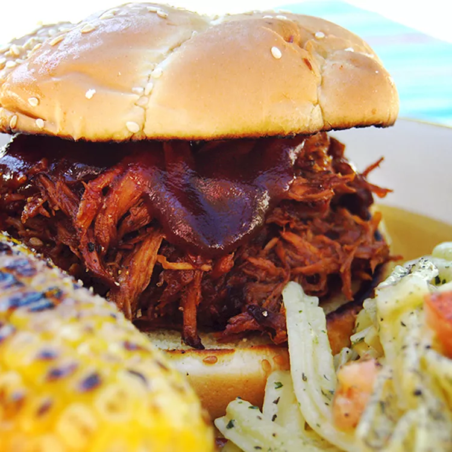

Slow Cooker Texas Pulled Pork

Description
This Texas-style pulled pork recipe has a tangy barbeque sauce that's easy to make in the slow cooker.
I like to serve the shredded pork on toasted buttered rolls. My family's favorite!
Ingredients
- 1 teaspoon vegetable oil
- 1 (4 pound) pork shoulder roast
- 1 cup barbeque sauce
- ½ cup apple cider vinegar
- ½ cup chicken broth
- ¼ cup light brown sugar
- 1 tablespoon prepared yellow mustard
- 1 tablespoon Worcestershire sauce
- 1 tablespoon chili powder
- 1 extra large onion, chopped
- 2 large cloves garlic, crushed
- 1 ½ teaspoons dried thyme
- 8 hamburger buns, split
- 2 tablespoons butter, or as needed
Steps
- Step1
- Pour vegetable oil into the bottom of a slow cooker.
- Place pork roast into the slow cooker; pour in barbeque sauce, vinegar, and chicken broth.
- Stir in brown sugar, yellow mustard, Worcestershire sauce, chili powder, onion, garlic, and thyme.
- Cover and cook on Low for 10 to 12 hours or High for 5 to 6 hours until pork shreds easily with a fork.
- Step2
- Remove pork from the slow cooker, and shred the meat using two forks.
- Return shredded pork to the slow cooker, and stir to combine with juices.
- Step3
- Spread the inside of both halves of hamburger buns with butter.
- Toast buns, butter-side down, in a skillet over medium heat until golden brown.
- Spoon pulled pork into toasted buns.
Back to main